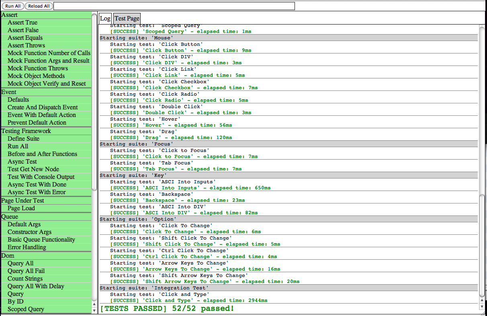

JavaScript testing framework with synthetic event based GUI testing support as well as asynchronous tests.
Modern web applications can be difficult to test due to a number of different factors. First, GUIs can be difficult to test due to their asynchronous nature. Second, user interaction is difficult to simulate in browsers. There are tools like Selenium which can remotely control the browser but the tests are far removed from the code they are testing, which is not ideal. There are other tools such PhantomJS+CasperJS which can help with testing more traditional form and link based applications. For more complicated web applications which require more complicated user interaction a more complete tool is needed.
Jstestr is a testing framework which is designed to help test business logic, GUI components, and whole web applications in modern browsers. It uses simulated DOM events to simulate user interactions to perform actions such as clicking buttons and typing into text areas.
Jstestr includes a test suite for testing itself. The test suite can be executed here.

The documentation is available in the JsTestr repository or online here. The tests of the framework can also be followed as examples for now.
$ git clone git://github.com/jrfeenst/jstestr.git
$ git submodule init
$ git submodule update
The submodule commands are to sync down RequireJS which is used by the runner.html page. If you use another AMD compliant loader (such as dojo) you can modify the runner.html or create your own.